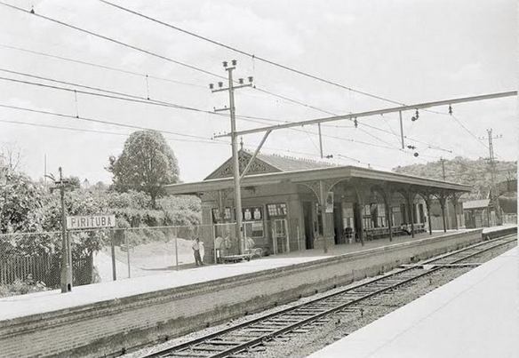
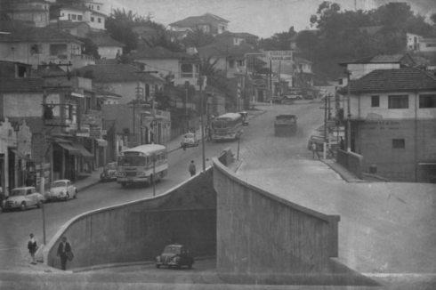
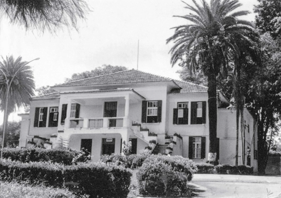

PIRITUBA
Tudo o que você precisa saber sobre o tradicional bairro de Pirituba.
nossa história
|  |
De origem indígena, o nome Pirituba vem da junção das sílabas “piri” (referente a taboa, uma vegetação de brejo em abundância na região) e “tuba” (nome aumentativo entre os índios que significa “muito”). Local que nasceu no século XIX, hoje abriga três distritos: Pirituba, Jaraguá e São Domingos.. Em 1 de fevereiro, comemoram-se os 132 anos do bairro, um dos mais icônicos no desenvolvimento da metrópole. Durante o período de formação da região, as fazendas de Luiz Pereira Barreto, Brigadeiro Tobias de Aguiar (marido da Marquesa de Santos) e Vila Jaguará (que em grande parte é do próprio Governo de São Paulo até os dias de hoje) foram as de maior destaque, atraindo desenvolvimento – como a construção de uma estação de trem que ligava São Paulo à Campinas – e dando início a industrialização da região com a participação de empresas como São Paulo Railway, Cia. Armour do Brasil, entre outras. Com o início do desenvolvimento em Pirituba, o bairro tornou-se um grande produtor de café. Graças as grandes fazendas cafeeiras, Pirituba conseguiu atrair atenção de empresários e, por consequência, contou com a São Paulo Railway para construir a estação de trem, no fim do século XIX. A produção de café era tão grande que a São Paulo Railway interviu para estabelecer uma logística ao transporte de cargas. O caminho de Piqueri era a alternativa para a região. O trajeto ligava a Freguesia do Ó à estação de Pirituba; além de levar à Osasco e Vila Pirituba, e também havia a ligação de Pirituba com a estação de Taipas. Mas, foi em 1922 que Pirituba começou a receber um número maior de moradores, em grande parte imigrantes europeus. Por conta da expansão da indústria cafeeira no Estado de São Paulo e, depois, da transferência da produção de café à zona da Av. Paulista, as fazendas foram divididas entres os novos residentes do bairro (pertencentes as terras Barreto e Brigadeiro Tobias Barreto), e deram vida à Vila Pereira Barreto, região central da povoação de Pirituba. Para prosseguir com o desenvolvimento da região e continuar participando ativamente de atividades econômicas importantes, Pirituba recebeu três empreendimentos que hoje representam a identidade histórica do bairro: a Fábrica de Tecidos, o Sanatório Pinel e a Capela São Luiz de Gonzaga foram os primeiros estabelecimentos de sucesso que não abordavam a produção de café. Com a participação dos novos agentes econômicos, Pirituba driblou a saída do café, até então motor econômico da região, com a chegada da energia elétrica ao bairro, estabelecida pela Fábrica de Tecidos, que ligou a rede elétrica do Piqueri à região em 1927. Indústrias também estabeleceram-se em Pirituba, principalmente aquelas de imigrantes europeus. O Lanifício Pirituba tem origem inglesa, bem como a Cia. Anglo Brasileira de Indústria de Borracha, em 1929. Já os holandeses – que juntaram-se aos ingleses, predominantes na região – foram representados pela Gessy-Lever, atualmente a multinacional Unilever. |
|  | |
|  |
״ Se sente à vontade Quem sai tem saudade E lá Pico do Jaraguá Completa nossa paisagem."
POLLO